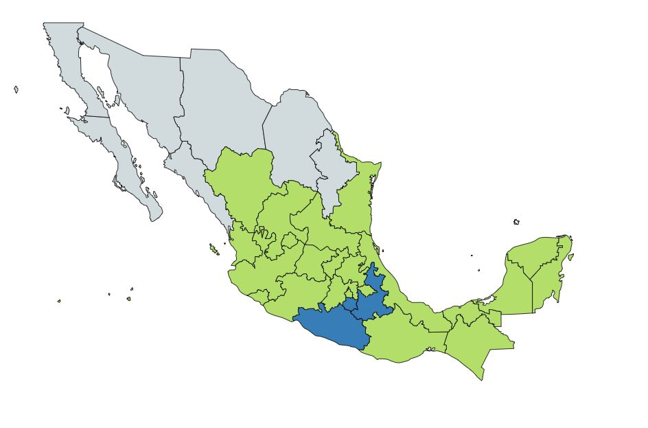

Descripcion:
Su nombre común proviene del náhuatl, y significa “hierba comestible mariposa” porque la forma de sus hojas recuerda la de las alas de este insecto. Nombres en maya: Pech’uk, xpech uk’il. Esta planta herbácea, de hojas aromáticas crece silvestre en muchas regiones del país, forma parte de los ingredientes de muchos platos tradicionales; se le utiliza como condimento en salsas y guisos; su sabor y aroma así como cualidades digestivas se asemejan a las del cilantro, por lo que suele emplearse en sustitución de este. Suele alcanzar una altura promedio de 40 cm. aunque en climas cálidos llega a medir hasta 2 metros.
Usos Medicinales:
Posee diversas propiedades medicinales:
- Ayuda al corazón a regular la presión alta.
- Reduce el colesterol, ayuda a prevenir la ateroesclerosis (acumulación de grasa en las paredes de las arterias).
- Mejora la digestión.
- Su uso medicinal se recomienda para tratar enfermedades del hígado, como la congestión o cálculos de la vesícula.
- Como es una hierba rica en calcio protege el sistema óseo.
- Alivia diarreas y disentería (infección que se caracteriza por la inflamación del intestino grueso).
- Fortalece el sistema inmune.
- Beneficia el sistema ocular.
- Combate la anemia.
- Aporta vitaminas del complejo A,C y B.
- Ayuda a prevenir la anemia. Como recomendación, combina el pápalo con un vegetal rico en vitamina C.

Contra-indicaciones:
Posee propiedades como emenagogo (estimula la matriz para hacer bajar la regla) y por esta misma razón no se debe emplear durante el embarazo; tampoco se debe usar durante la lactancia pues se pasa a la leche alterando la digestión del bebé. También es útil como laxante, para algunos problemas digestivos, presión alta de la sangre y ataques de epilepsia. No se recomienda su uso en niños pequeños (menores de siete años).
